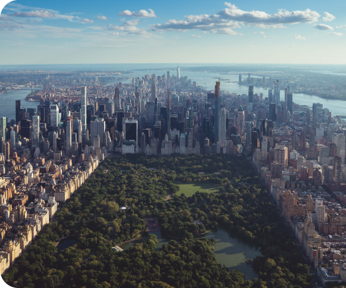
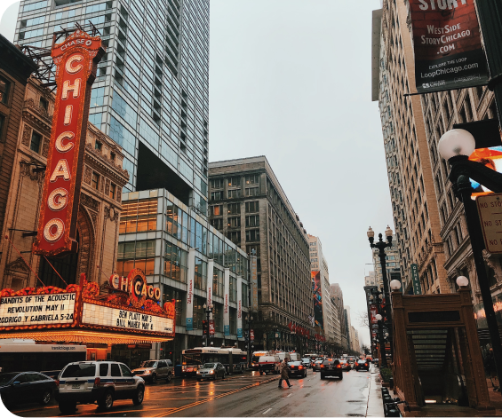
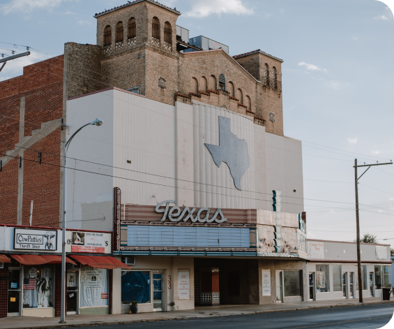
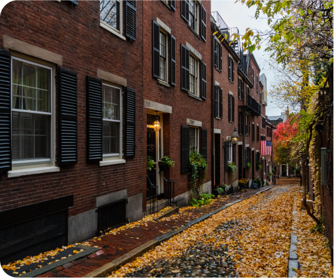
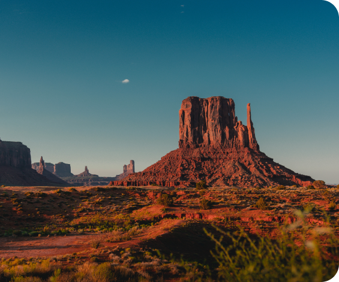

STATES
-

New York
One of the most unusual administrative units of the United States, the largest in the group of Mid-Atlantic states. These include vast areas of quiet agricultural areas stretching from the ocean to the Canadian border, and wooded spurs of the Appalachian, Adirondack, and Alleghany Mountains
Capital: Albany Cities: New York, Buffalo -
California
A true state of contrasts. It is home to the highest and lowest points of the continental United States (Mount Whitney and Death Valley), numerous ski resorts and deserts, mountains and beaches, forests and valleys, old Spanish monasteries and skyscrapers
Capital: Sacramento Cities:Los Angeles, San Francisco -

Illinois
It is famous for its grassy uplands and lakes, old industrial centers and forests. The Illinois Beach area on Lake Michigan north of Chicago is very popular in this state, as well as small resort areas along the shores of numerous rivers and lakes
Capital: Springfield Cities:Chicago, Orora, Rockford -

Texas
The huge state of Texas is considered one of the centers of American agriculture and industry, being in the eyes of many the embodiment of the United States. Texas is very different in terms of its population, level of development, and natural and climatic conditions
Capital: Austin Cities: Houston, Dallas -

Massachusets
Along with the many industrial centers here, you can visit the excellent beaches of Massachusetts Bay, Cape Cod, Buzzards and Narragansett, see the sand dunes around Falmouth and Eastham, the old merchant quarters of the first European settlements in the U.S. territory and many historic outdoor museums
Capital: Boston Cities: Seylem, Worcester -

Utah
It is located in the heart of the Rocky Mountains. The climate is sharply continental in the northern areas and close to subtropical in the south, but equally arid throughout the territory. However, it is a fairly green state - the mountainous areas with their cooler climate and abundance of rivers favor the growth of forests
Capital: Salt Lake City Cities: St. George, Ogden